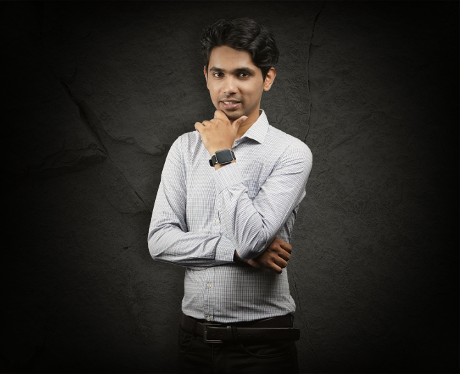

My name is Abel Roney; I am enrolled as a 1st year student at Algonquin college for Interactive Media Design. I come from Kerala, which is a state at the southern tip of India. I completed my bachelor’s in engineering from Karunya University, Coimbatore, Tamil Nadu, India, after that I worked for Tenneco Automotive Pvt. Ltd., as a manufacturing engineer. After a couple of years, I felt dried up and lacked the motivation to continue in my field; so I switched careers and joined an NGO, where I was a part of their media team.
-It’s never too late to start something new, to do all those things that you’ve been longing to do.- Dallas Clayton
As a teen, media always fascinated me as a source that could inspire millions. When I was given the opportunity to follow my passion, I grabbed onto it the first chance I got. A couple of years into the media industry, I realised that I lacked certain skill sets and my information based was scattered; That’s when I came across the IMD program at Algonquin College. This program was diverse and covered all major parts of media communication. With this degree under my belt, I’m sure I would earn a competitive edge over my peers. That’s my story and how I have ended up here.
Hobbies
- Playing badminton
- Playing video games